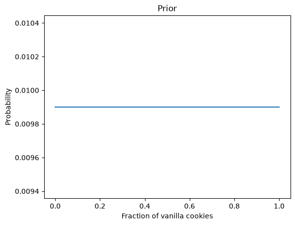
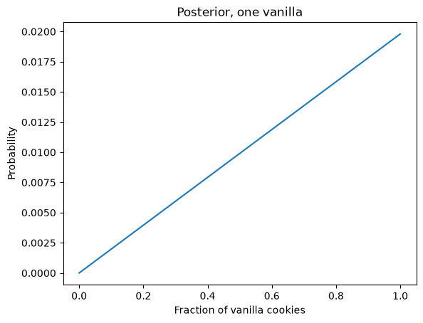
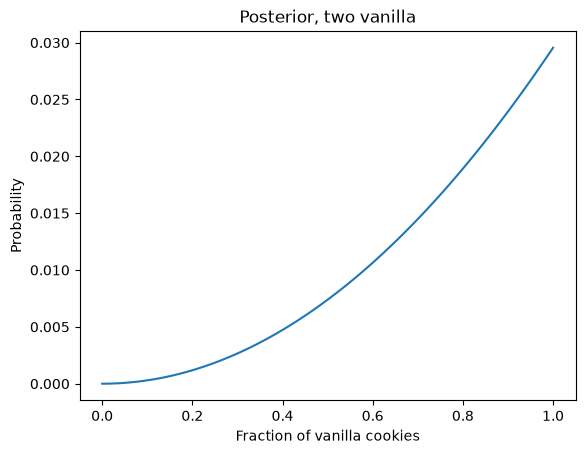
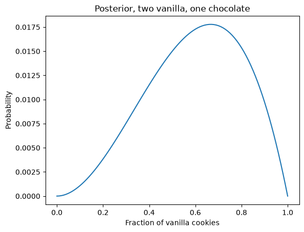

The cookie problem#
Code and exercises from my workshop on Bayesian statistics in Python.
Click here to run this notebook on Colab. For the exercises, use the version with blanks.
import numpy as np
import pandas as pd
import matplotlib.pyplot as plt
import seaborn as sns
Suppose you have two bowls of cookies. Bowl 1 contains 30 vanilla and 10 chocolate cookies. Bowl 2 contains 20 of each.
You choose one of the bowls at random and, without looking into the bowl, choose one of the cookies at random. It turns out to be a vanilla cookie.
What is the chance that you chose Bowl 1?
Assume that there was an equal chance of choosing either bowl and an equal chance of choosing any cookie in the bowl.
Here are the hypotheses and prior probabilities.
hypos = 'Bowl 1', 'Bowl 2'
probs = 1/2, 1/2
To compute the answer, I’ll use a Pandas Series to represent the hypotheses and their probabilities.
prior = pd.Series(probs, hypos)
prior
Bowl 1 0.5
Bowl 2 0.5
dtype: float64
This Series represents a probability mass function (PMF).
Now we compute the likelihood of the data under each hypothesis.
The chance of getting a vanilla cookie from Bowl 1 is 3/4.
The chance of getting a vanilla cookie from Bowl 2 is 1/2.
likelihood = 3/4, 1/2
The next step is to multiply the priors by the likelihoods:
unnorm = prior * likelihood
unnorm
Bowl 1 0.375
Bowl 2 0.250
dtype: float64
The result is called unnorm because it is an “unnormalized posterior”.
To compute the posteriors, we have to divide through by \(P(D)\), which is the sum of the unnormalized posteriors.
prob_data = unnorm.sum()
prob_data
np.float64(0.625)
Notice that we get 5/8, which is \(P(D)\), the total probability of the data.
Now we divide by prob_data to get the normalized posteriors:
posterior = unnorm / prob_data
posterior
Bowl 1 0.6
Bowl 2 0.4
dtype: float64
The posterior probability for Bowl 1 is 0.6, which is what we would get by applying Bayes’s Theorem explicitly.
As a bonus, we also get the posterior probability of Bowl 2, which is 0.4.
The posterior probabilities add up to 1, which they should, because the hypotheses are “complementary”; that is, either one of them is true or the other, but not both.
When we add up the unnormalized posteriors and divide through, we force the posteriors to add up to 1. This process is called “normalization”, which is why the total probability of the data is also called the “normalizing constant”.
Exercise 1#
Suppose we put the first cookie back, stir, draw another cookie from the same bowl, and it’s a chocolate cookie. What is the probability we drew both cookies from Bowl 1?
Hint: The prior for the second update is the posterior from the first update.
prior2 = posterior
prior2
Bowl 1 0.6
Bowl 2 0.4
dtype: float64
Now
Compute the likelihood of the data under each hypothesis,
Multiply the new prior by the likelihoods.
Divide through by the total probability of the data.
# Solution
likelihood2 = 1/4, 1/2
# Solution
unnorm2 = prior2 * likelihood2
unnorm2
Bowl 1 0.15
Bowl 2 0.20
dtype: float64
# Solution
prob_data2 = unnorm2.sum()
prob_data2
np.float64(0.35)
# Solution
posterior2 = unnorm2 / prob_data2
posterior2
Bowl 1 0.428571
Bowl 2 0.571429
dtype: float64
101 Bowls#
Suppose instead of 2 bowls there are 101 bowls:
Bowl 0 contains no vanilla cookies,
Bowl 1 contains 1% vanilla cookies,
Bowl 2 contains 2% vanilla cookies,
and so on, up to
Bowl 99 contains 99% vanilla cookies, and
Bowl 100 contains all vanilla cookies.
As in the previous problem, there are only two kinds of cookies, vanilla and chocolate. So Bowl 0 is all chocolate cookies, Bowl 1 is 99% chocolate, and so on.
Suppose we choose a bowl at random, choose a cookie at random, and it turns out to be vanilla. What is the probability that the cookie came from Bowl \(x\), for each value of \(x\)?
To represent the prior, I’ll use a Pandas Series with 101 equally spaced quantities from 0 to 1.
xs = np.linspace(0, 1, num=101)
prob = 1/101
prior = pd.Series(prob, xs)
prior.head()
0.00 0.009901
0.01 0.009901
0.02 0.009901
0.03 0.009901
0.04 0.009901
dtype: float64
Here’s what it looks like.
prior.plot()
plt.xlabel('Fraction of vanilla cookies')
plt.ylabel('Probability')
plt.title('Prior');

Now that we have a prior, we need to compute likelihoods.
Here are the likelihoods for a vanilla cookie:
likelihood_vanilla = xs
And for a chocolate cookie.
likelihood_chocolate = 1 - xs
To compute unnormalized posteriors, we multiply the priors and the likelihoods.
unnorm = prior * likelihood_vanilla
To normalize, we divide through by the total probability of the data.
posterior = unnorm / unnorm.sum()
Here’s what the posterior looks like.
posterior.plot()
plt.xlabel('Fraction of vanilla cookies')
plt.ylabel('Probability')
plt.title('Posterior, one vanilla');

Suppose we put the first cookie back, stir the bowl, draw from the same bowl again, and get a vanilla cookie again.
What are the posterior probabilities now?
We can do another update, using the posterior from the first draw as the prior for the second draw.
prior2 = posterior
unnorm2 = prior2 * likelihood_vanilla
posterior2 = unnorm2 / unnorm2.sum()
And here’s what it looks like.
posterior2.plot()
plt.xlabel('Fraction of vanilla cookies')
plt.ylabel('Probability')
plt.title('Posterior, two vanilla');

Exercise 2#
Suppose we put the second cookie back, stir the bowl, draw from the same bowl again, and get a chocolate cookie.
Now what are the posterior probabilities?
# Solution
prior3 = posterior2
unnorm3 = prior3 * likelihood_chocolate
posterior3 = unnorm3 / unnorm3.sum()
# Solution
posterior3.plot()
plt.xlabel('Fraction of vanilla cookies')
plt.ylabel('Probability')
plt.title('Posterior, two vanilla, one chocolate');

# Solution
posterior3.idxmax()
np.float64(0.67)
Copyright 2020–2026 Allen Downey